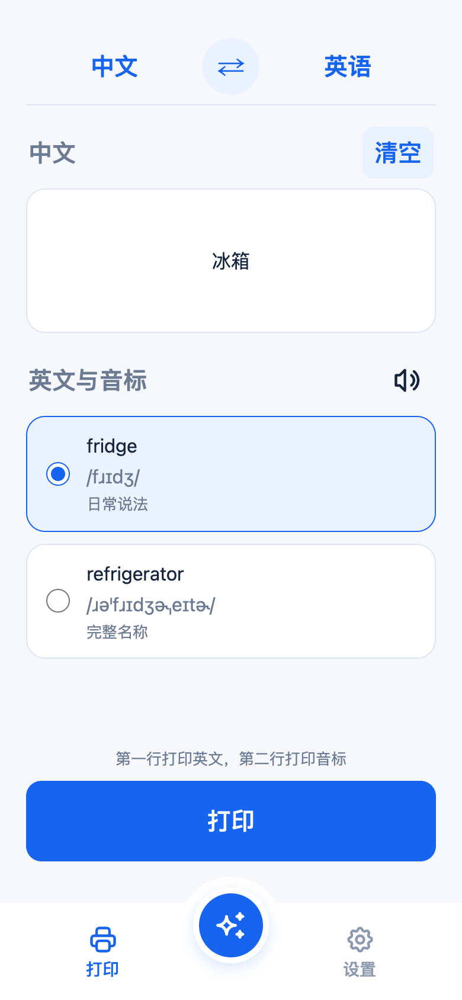
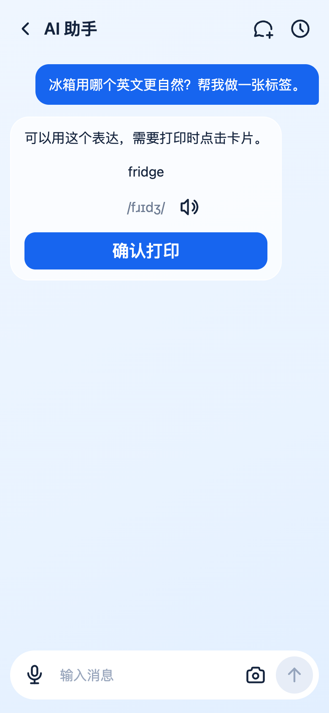

选对生活里的那个词
中文、英文都能输入。核对译文与美式音标，选好合适的表达，再打印。

标签尺寸、字号和边距，按你的需要调整。
选一个身边的物品，看看它的英文标签。
把选词、发音和打印，放进同一个小工具。
中文、英文都能输入。核对译文与美式音标，选好合适的表达，再打印。

标签尺寸、字号和边距，按你的需要调整。
描述物品，或选择一张照片。让 AI 帮你理解差别、挑选表达，再确认标签。

对话保存在本机，熟悉的词可以再回来看。
输入中文或英文，也可以和 AI 聊聊眼前的物品。
核对英文与音标，点一下朗读，先认识它的发音。
连接德佟 P0，确认后打印。太长的词组可拆成多张。
准备一台德佟 P0 和标签纸，
从身边的第一个词开始。
当前支持德佟 P0 蓝牙标签打印机，默认标签尺寸为 30 × 12 mm。请使用与设备匹配的标签纸；其他型号尚未验证。
目前提供源码与安装指南，尚未提供 App Store 或 TestFlight 下载。iPhone 版本需要 Mac、Xcode 和自己的 Apple 签名配置。
需要在设置中填写你自己的模型服务地址、API Key 和模型名称，服务须兼容 Anthropic Messages 协议。照片识别需要模型支持图片，使用费用以模型服务商为准。
翻译和 AI 对话需要网络；音标词典与聊天历史保存在本机。翻译内容会发送到翻译服务，对话和主动发送的照片会发送给你配置的模型服务。
这里是产品介绍与标签示例。真实打印请使用 iPhone App 或 Mac 本地服务；AI 生成的标签也需要你确认后才会打印。